إيماناً بأهمية تحويل المخرجات التعليمية إلى أثر ملموس، وبحمد الله تعالى وتوفيقه، أطلقت طالبات قسم علوم الحاسب بجامعة الملك سعود مبادرة "معرض عالمات الحاسب"، وهو حدث فصلي تُستعرض فيه مشاريع مقررات القسم.
يهدف المعرض ليكون فرصة علمية ومعرفية تظهر أبرز إسهامات طالبات القسم من مختلف المستويات، ويسهم بتطوير مهاراتهن الاجتماعية والتقديمية.
مشروعاً مميزاً
طالبة مشاركة
زائرة للمعرض
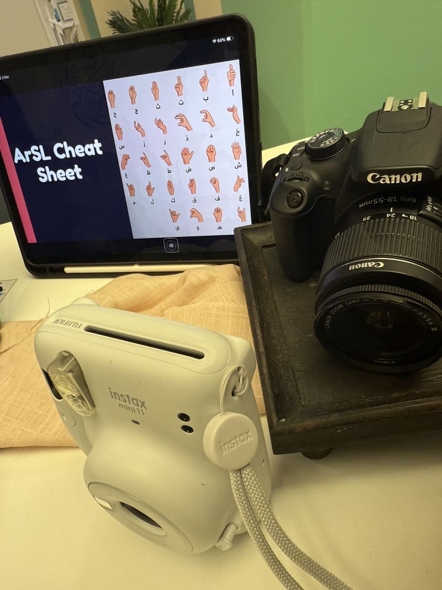
نظام رؤية حاسوبية يعتمد على نماذج (YOLO) لاكتشاف وتصنيف حروف لغة الإشارة العربية التي تظهر بالكاميرا الموجودة على الحاسب المحمول.

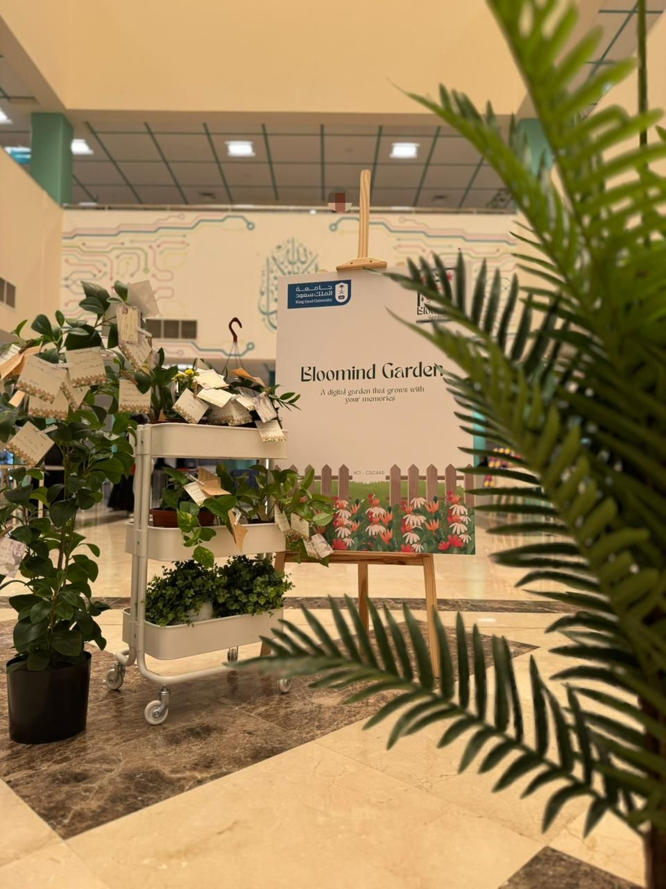
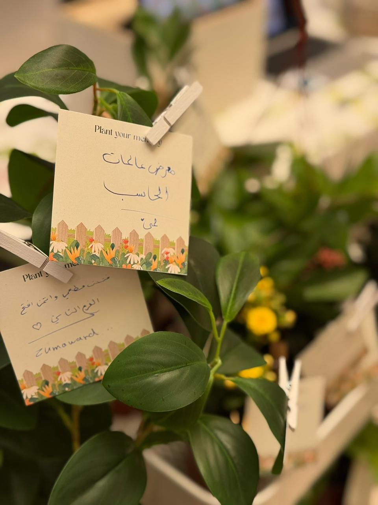

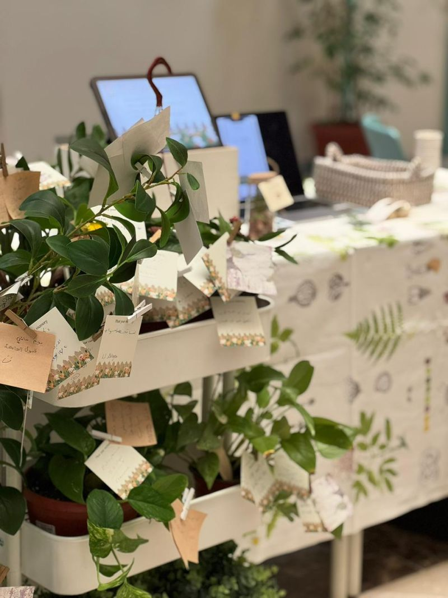
تصميم واجهة مستخدم لتطبيق تدوين عاطفي لتوثيق اللحظات كحديقة رقمية شخصية تتحول فيها الذكريات لنبتة تزدهر لتجربة بصرية هادئة.
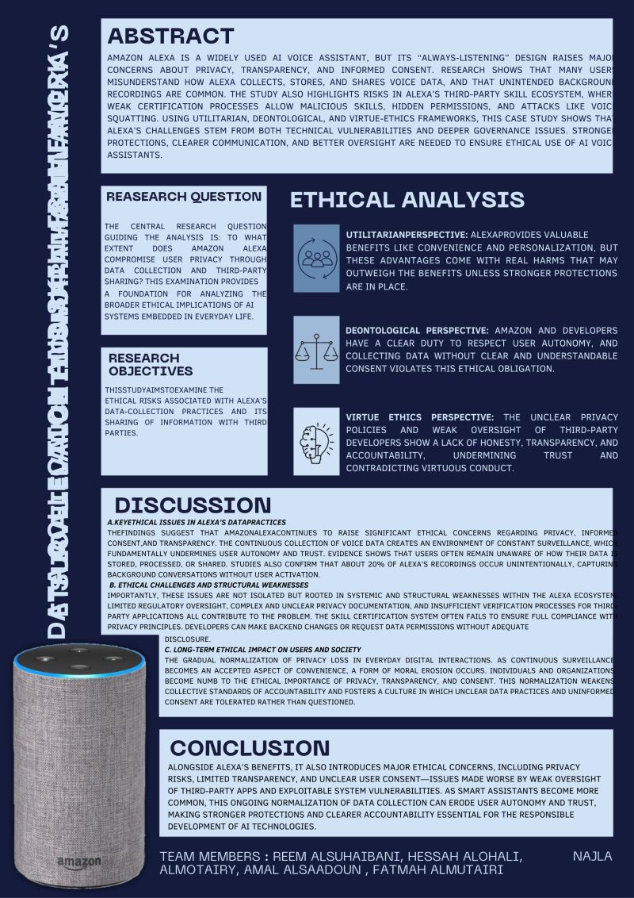
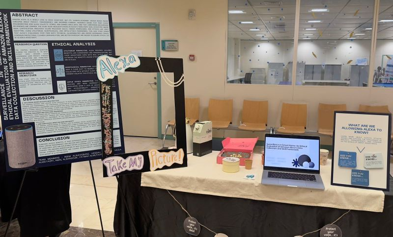
بحث يدعو لإعادة النظر في الجوانب الأخلاقية للمساعدات الصوتية، محللاً التسجيلات غير المقصودة، والتهديدات الأمنية لضمان الخصوصية والرفاهية.
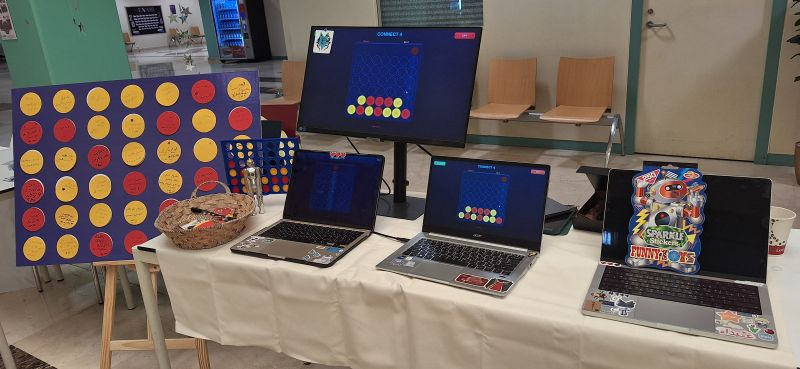
نموذج ذكاء اصطناعي درب بأسلوب التعلم التجميعي، ليتنبأ بالحركة التالية الأمثل للفوز بلعبة الأربعة تربح، مع واجهة رسومية تفاعلية لتجربة اللعب.
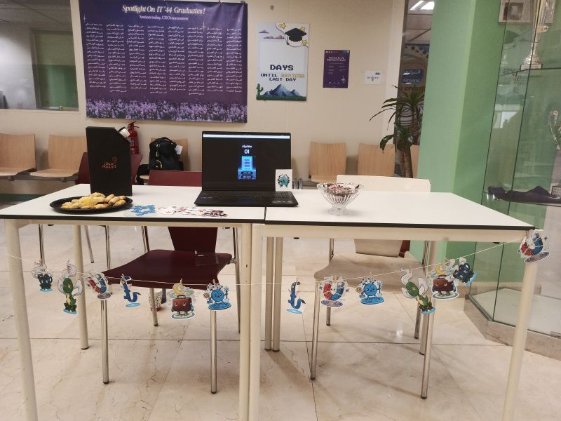
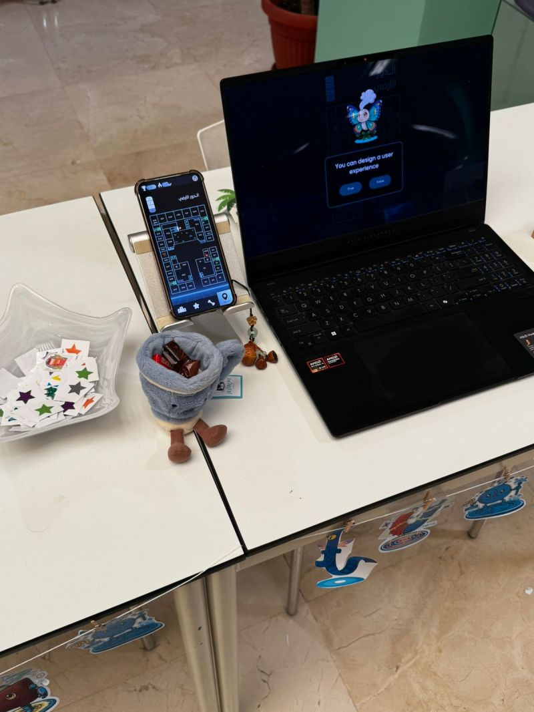
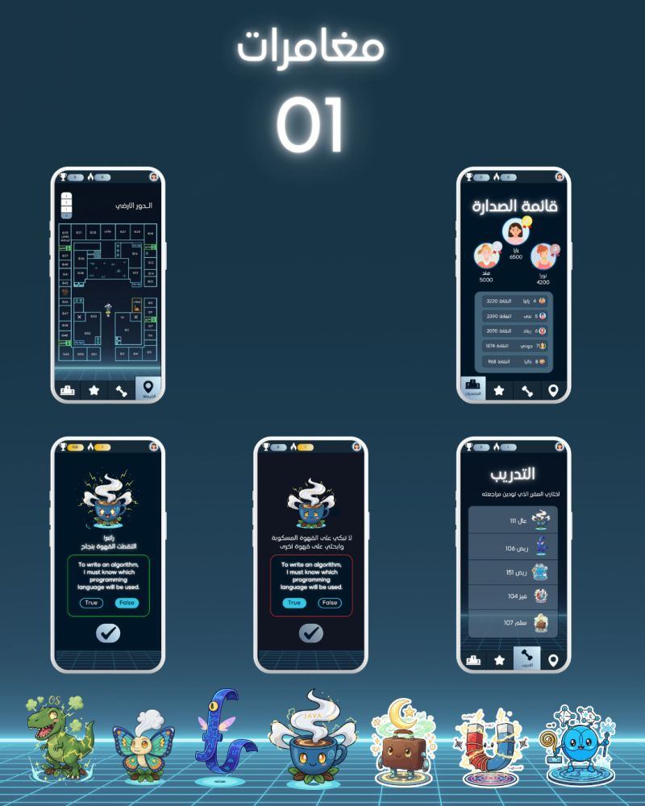
تصميم واجهة مستخدم للعبة تعليمية تهدف لتعزيز النشاط البدني والمذاكرة عبر خريطة للكلية تضم مخلوقات رقمية مستوحاة من المقررات يتم محاربتها.
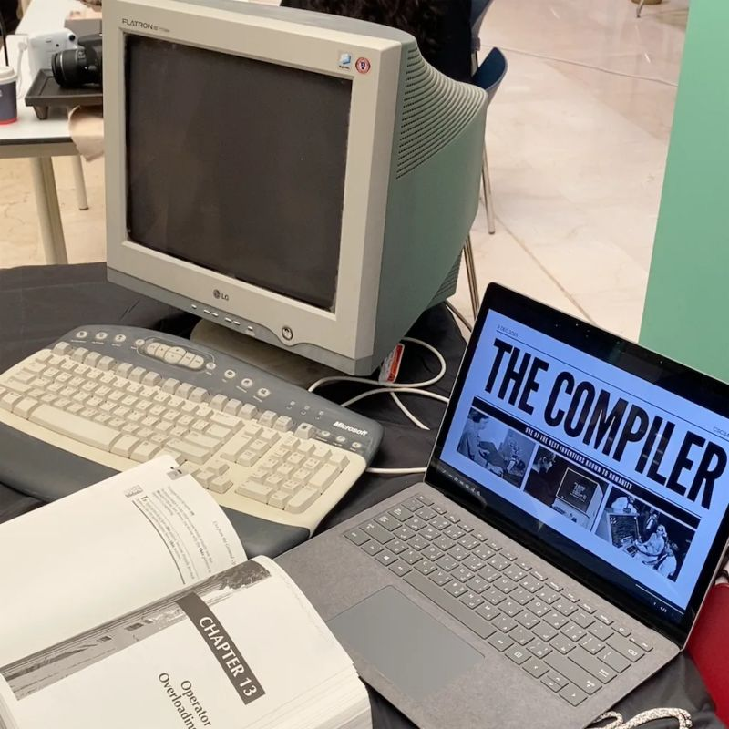
تطوير واجهة أمامية لمترجم لغة TINY عبر مرحلتين لبناء محلل لغوي ومحلل نحوي للتحقق من صحة البرنامج بناءً على قواعد اللغة.


تصميم واجهة مستخدم عربية لتطبيق إنتاجية يهدف لتنظيم المهام اليومية للأطفال، مصمم كلعبة بسيطة مع نظام مكافآت عبر المنهج التشاركي.
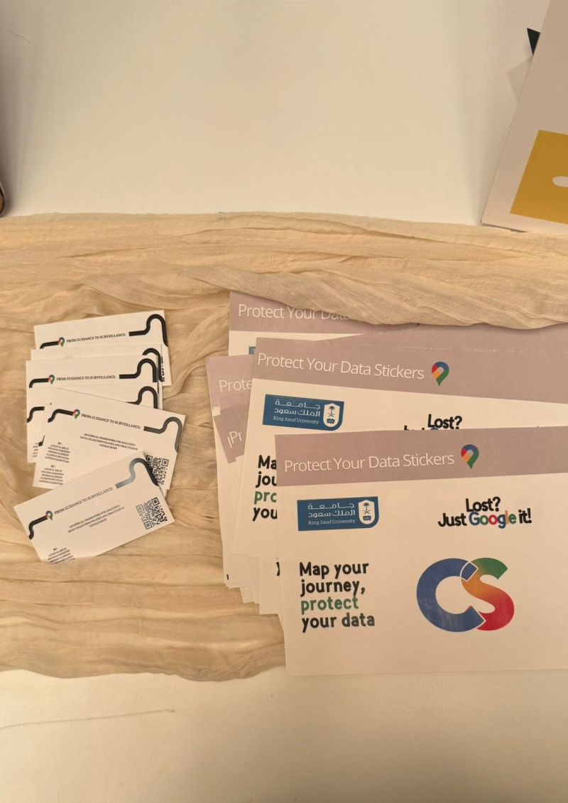
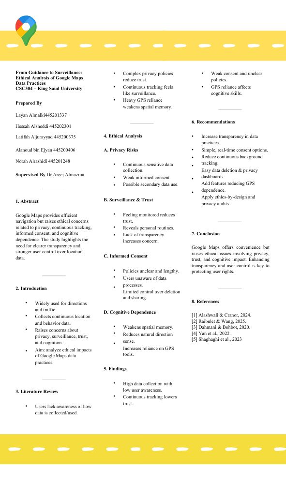
بحث يستكشف الأبعاد الأخلاقية لاستخدام خرائط جوجل، مع دراسة حجم البيانات، وعي المستخدمين، شفافية الخصوصية، والأثر النفسي للاعتماد على التقنية.
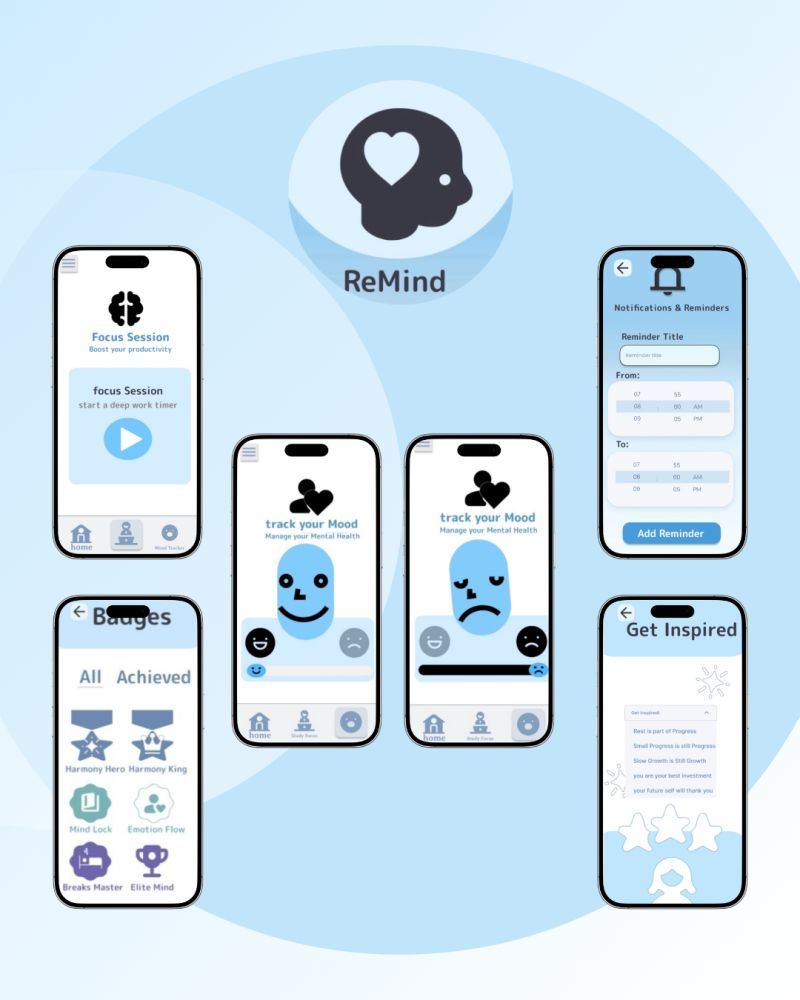
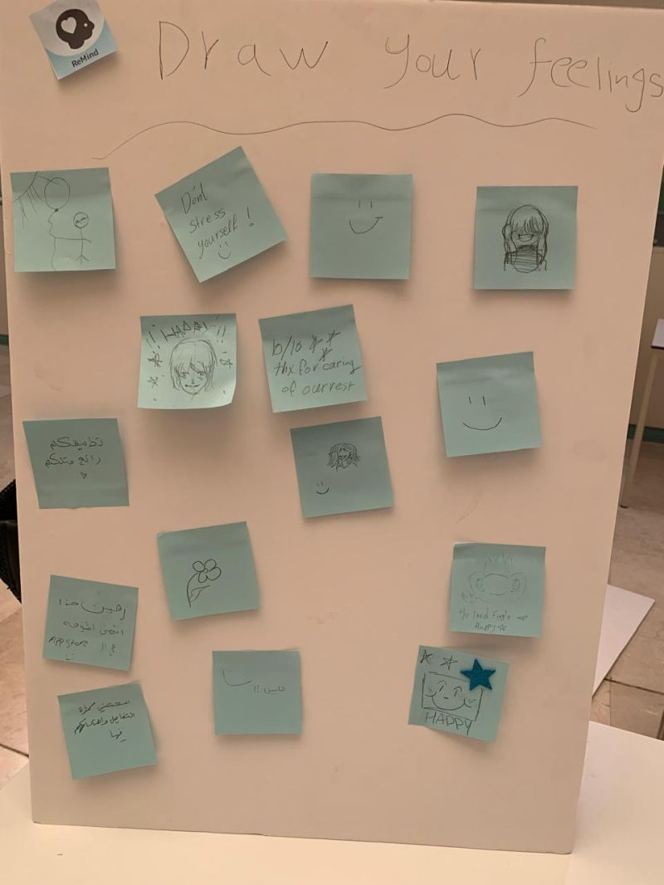
تصميم واجهة مستخدم لتطبيق يهدف لتعزيز تركيز الطلاب وإدارة التوتر عبر دمج جلسات المذاكرة بالدعم النفسي وتتبع الحالة المزاجية.
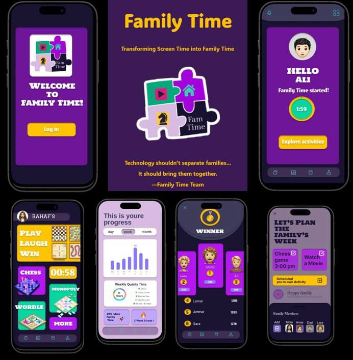
تصميم واجهة مستخدم لتطبيق يهدف إلى تعزيز التواصل الأسري وتنظيم الوقت المشترك، من خلال إدارة الجدول الأسبوعي، وتتبع الأنشطة الجماعية، والتذكير بالمناسبات.